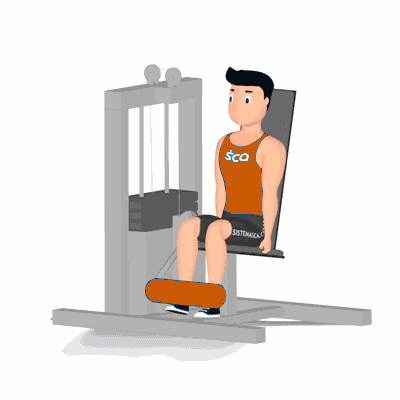

Banco Extensor

Exercício para fortalecimento e hipertrofia da região das coxas, com enfoque aos músculos reto femorais, vasto laterais e medias. Realiza no aparelho, indicado aos praticantes que desejam realizar um trabalho muscular isolado dos quadríceps.
Ficha Técnica
Tipo: Musculação
Grupo Muscular: Perna
Aparelho: Nenhum
Músculos: Nenhum
Como realizar
- Regule o aparelho de acordo com a altura das pernas;
- Sente na cadeira e coloque os pés logo abaixo do apoio;
- O ajuste correto do aparelho, os joelhos ficam em um ângulo de 90 graus e acomodados logo acima, na borda do banco;
- Manter as costas retas e apoiadas no encosto do banco, segure os pegadores;
- Empurre o peso para cima, estendendo os joelhos até que as pernas fiquem na posição horizontal;
- Retorne à posição inicial de forma controlada e repita os movimentos.
 RC STORE
RC STORE